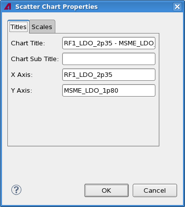
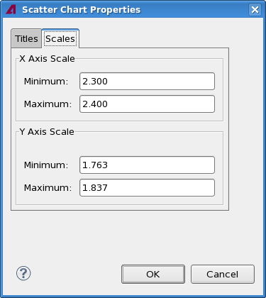

Scatter chart properties
The Scatter Chart Properties dialog lets you specify certain aspects of the look of a Scatter chart view, including the labels and the settings for the axes.
The dialog has two tabs, both of which are described below.
Titles

The Titles tab contains these elements:
- Chart Title: This field contains the title displayed at the top of
the chart.
By default, this is a combination of the names of the two charted tests in the main mode and "Range Chart" in the range chart mode.
- Chart Subtitle: The subtitle displayed beneath the title of the
chart.
By default, this is empty.
- X-Axis: The label for the x-axis
By default, this is the name of the first charted test in the main mode and "Test" in the range chart mode.
- Y-Axis: The label for the y-axis.
By default, this is the name of the second charted test in the main mode and "Min-Mean-Max" in the range chart mode.

The Scales tab contains these elements:
- X-Axis Scale:
- Minimum: The lowest value displayed on the x-axis.
- Maximum: The highest value displayed on the x-axis.
These fields are not available in the range chart mode.
- Y-Axis Scale:
- Minimum: The lowest value displayed on the y-axis.
- Maximum: The highest value displayed on the y-axis.
Functional changes
- Introduced in SmarTest 7.2.0